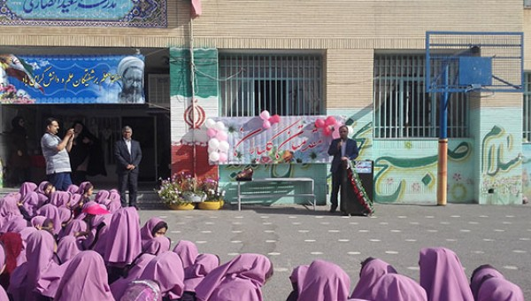

بیست و یکمین جشنواره خیرین مدرسه ساز استان اصفهان برگزار میشود
بیست و یکمین جشواره خیرین مدرسه ساز استان اصفهان جمعه 13 اردیبهشت ماه 98 در مجموعه فرهنگی رفاهی شهروند برگزار می شود به گزارش خبرنگار جامعه خیرین مدرسه ساز کشور بیست و یکمین جشواره خیرین مدرسه ساز استان اصفهان جمعه 13 اردیبهشت ماه 98 در مجموعه فرهنگی رفاهی شهروند برگزار می شود . توجه ویژه به ایمنی مدارس ، مدارس استثنایی ، مدارس شبانه روزی ، مدارس خطر آفرین تجهیزات هنرستان های فنی حرفه ای ، و مدارس آسیب دیده از محور های اصلی برنامه های جشنواره را تشکیل می دهد

ساخت بیش از 300 کلاس درس در سال
رئیس هیات مدیره مجمع خیرین مدرسه ساز اصفهان گفت :بطور میانگین هر ساله 333 کلاس درس در قالب 56 مدرسه توسط خیرین احداث و تحویل آموزش و پرورش می شود.به گزارش روابط عمومی جامعه خیرین مدرسه ساز کشور ، زهره میردامادیان رئیس هیات مدیره مجمع خیرین مدرسه ساز اصفهان گفت :هم اکنون 58 مدرسه شبانه روزی در 20 منطقه استان اصفهان فعالیت دارد که از این تعداد 21 مدرسه در دوره اول متوسطه ، 20 مدرسه در دوره متوسطه نظری ، 9 مدرسه دوره کاردانش و 8 مدرسه در دوره فنی حرفه ای مشغول ارائه خدمات هستند

جشواره خیرین مدرسه ساز در محل مدرسه زنده یاد سعید انصاری
جشواره خیرین مدرسه ساز در محل مدرسه زنده یاد سعید انصاری با حضور نماینده خبر برگزار شد . به گزارش روابط عمومی جامعه خیرین مدرسه ساز کشور ؛ مراسم تجلیل از خیر مدرسه ساز دکتر انصاری اردیبهشت ماه سال 98 با حضور نماینده خیر ، کارشناسان اداری ، کادر آموزشگاه و دانش آموزان برگزار شد.گفتنی است : اجرای سرود و دکلمه در وصف خیر واهدا لوح به نماینده خیر مدرسه ساز از جمله ویژه برنامه های این مراسم بود